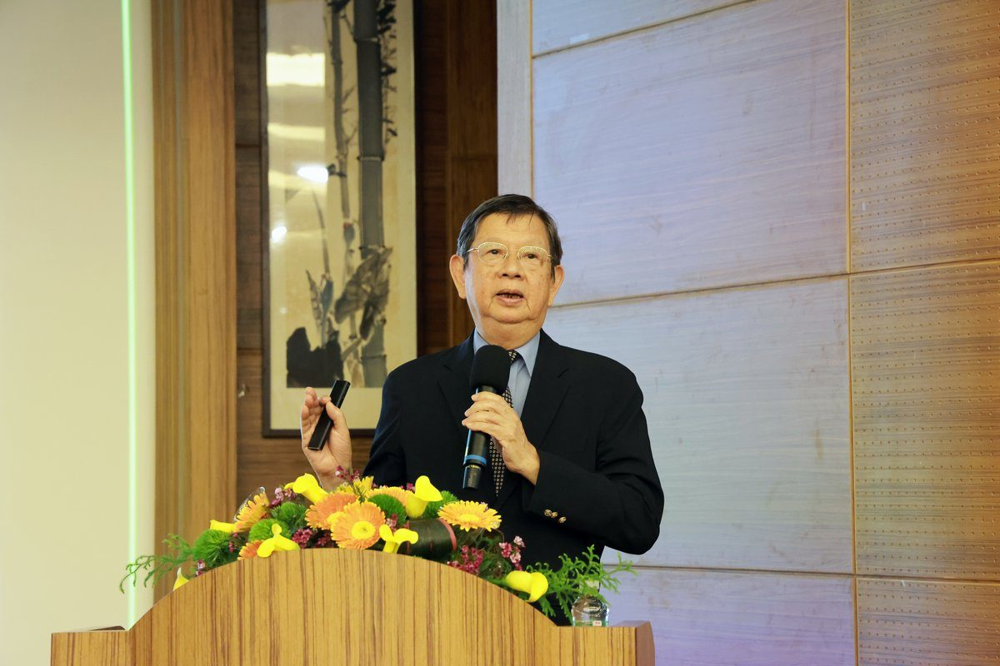

先看病人再問AI 花蓮慈院邀陳偉德談臨床教學

可樂電子報小編/編輯
人工智慧快速滲透醫療現場，從疾病診斷到病歷書寫，都逐漸成為臨床工作的重要輔助工具，卻也讓「未來醫師該怎麼學看病」成為醫學教育的新課題。花蓮慈濟醫院於2026年10月29日上午舉辦全院學術演講，邀請中國醫藥大學講座教授陳偉德，以「人工智慧於臺灣臨床醫學教育的應用」為題分享，強調醫學生必須先親自接觸病人、建立臨床判斷，再善用AI輔助學習，而不是反過來由AI替代思考。

會前，陳偉德也頒發中國醫藥大學第11屆「優良臨床教學獎」給花蓮慈院院長室資深顧問王英偉，肯定他長期投入臨床教學與全人醫療教育的貢獻。王英偉投入醫學教育已三、四十年，從醫學院的人文醫學、臨床教學到家庭醫學科住院醫師訓練，一路以「全人」角度培育醫學生，這份獎項也表彰他在臨床教學現場的長期耕耘。

長期投入臺灣醫學教育改革的陳偉德，曾任中國醫藥大學代理校長、副校長及北港附設醫院院長，並積極推廣迷你臨床演練評量（mini-CEX）等教學方法。他分享中國醫藥大學兒童醫院推動的「看病人、寫病歷、問AI、學看病」模式，讓醫學生先親自接觸病人、蒐集病史並完成病歷初稿，再逐步將相關資訊提供給AI分析，比較AI提出的可能診斷與自己的判斷。
最後一哩路是查證與教師指導。陳偉德指出，透過與教師討論，才能釐清診斷與處置背後的思考邏輯；過去指導醫學生寫病歷，往往著重英文文法與文字修正，但真正重要的是病歷內容的邏輯，以及診斷與處置是否有充分依據。這套模式推行一年後，從學生回饋中觀察到，醫學生撰寫病歷的架構與條理更加清晰，也更能透過病歷書寫思考臨床問題，學生對AI輔助學習的滿意度平均達九分制中的八分。
除了輔助醫學生學習，陳偉德也介紹生成式AI病歷品質審查研究，透過設定評量標準，協助檢視病史紀錄、身體檢查、診斷評估及治療處置等內容，並提供修正建議。研究過程也邀請花蓮慈院等醫學中心提供病歷資料，增加研究資料的多元性；他表示，相關研究已有成果，期望未來能運用AI提升病歷審查效率，作為臨床教學與品質改善的參考。
陳偉德提醒，AI雖能快速整理資訊、提供診斷建議，卻無法取代醫師親自觀察病人與建立臨床判斷的過程。醫師必須先接觸病人、有自己的想法，再透過AI檢視是否有所遺漏，而非直接交由AI產生病歷；面對AI可能帶來的依賴問題，醫學教育也必須與時俱進，培養學生發現問題、提出問題，以及查證與批判AI答案的能力。
王英偉則分享，早在三十年前他便提出「數位時代是為了讓我們有更多的時間與人接觸」，即使科技不斷進步，醫療教育仍應回到人的需求，讓年輕醫師學習理解病人，而不只是掌握醫療知識與技術。醫務秘書吳雅汝也分享，陳偉德在演講中不斷提醒醫學生保有自己的思考與批判能力，尤其必須先從病人身上取得正確的第一手資料；AI可以協助整理及潤飾資訊，卻無法憑空呈現病人真實的疾病歷程，未來醫師除了學習使用AI，更要懂得查證資訊、理解病人，才能堅守「人醫」而非「AI醫生」的核心角色。
📸 更多現場紀實影像